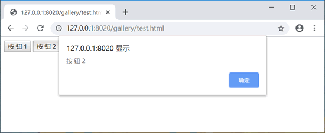

首页 > 编程笔记
JS addEventListener()和attachEvent()方法：注册事件
在 JavaScript 的 DOM 事件模型中，通过调用对象的 addEventListener() 方法注册事件。用法如下：
IE 事件模型使用 attachEvent() 方法注册事件。用法如下：
使用 attachEvent() 注册事件时，其事件处理函数的调用对象不再是当前事件对象本身，而是 window 对象，因此事件函数中的 this 就指向 window，而不是当前对象，如果要获取当前对象，应该使用 event 的 srcElement 属性。
IE 事件模型中的 attachEvent() 方法第 1 个参数为事件类型名称，需要加上 on 前缀，而使用 addEventListener() 方法时，则不需要这个 on 前缀，如 click。
element.addEventListener(String type, Function listener, boolean useCaptrue);
参数说明如下：- type：注册事件的类型名。事件类型与事件属性不同，事件类型名没有 on 前缀。例如，对于事件属性 onclick 来说，所对应的事件类型为 click。
- listener：监听函数，即事件处理函数。在指定类型的事件发生时将调用该函数。在调用这个函数时，默认传递给它的唯一参数是 event 对象。
- useCaptrue：是一个布尔值。如果为 true，则指定的事件处理函数将在事件传播的捕获阶段触发；如果为 false，则事件处理函数将在冒泡阶段触发。
示例1
下面示例使用 addEventListener() 为所有按钮注册 click 事件。首先，调用 document 的 getElementsByTagName() 方法捕获所有按钮对象；然后，使用 for 语句遍历按钮集（btn），并使用 addEventListener() 方法分别为每一个按钮注册事件函数，获取当前对象所显示的文本。
<button id="btn1" onclick="btn1();">按 钮 1</button>
<button id="btn2" onclick="btn2(event);">按 钮 2</button>
<script>
var btn = document.getElementsByTagName("button"); //捕获所有按钮
for(var i in btn){ //遍历按钮集合
btn[i].addEventListener("click", function(){
alert(this.innerHTML);
}, true); //为每个按钮对象注册一个事件处理函数，定义在捕获阶段进行响应
}
</script>
在浏览器中预览，单击不同的按钮，则浏览器会自动显示按钮的名称。效果如图所示：

使用 addEventListener() 方法能够为多个对象注册相同的事件处理函数，也可以为同一个对象注册多个事件处理函数。为同一个对象注册多个事件处理函数对于模块化开发非常有用。示例2
在下面示例中，为段落文本注册两个事件：mouseover 和 mouseout。当光标移到段落文本上面时会显示为蓝色背景，而当光标移出段落文本时会自动显示为红色背景。这样就不需要破坏文档结构为段落文本增加多个事件属性。
<p id="p1">为对象注册多个事件</p>
<script>
var p1 = document.getElementById("p1"); //捕获段落元素的句柄
p1.addEventListener("mouseover", function () {
this.style.background = 'blue';
}, true); //为段落元素注册第1个事件处理函数
p1.addEventListener("mouseout", function () {
this.style.background = 'blue';
}, true); //为段落元素注册第2个事件处理函数
</script>
IE 事件模型使用 attachEvent() 方法注册事件。用法如下：
element.attachEvent(etype, eventName)
参数列表如下：- etype：设置事件类型，如 onclick、onkeyup、onmousemove 等。
- eventName：设置时间名称，也就是事件处理函数。
示例3
在下面示例中，为段落标签 <p> 注册两个事件：mouseover 和 mouseout，设计当光标经过时，段落文本背景色显示为蓝色，当光标移开之后，背景色显示为红色。
<p id="p1">为对象注册多个事件</p>
<script>
var p1 = document.getElementById("p1"); //捕获段落元素
p1.attachEvent("onmouseover", function () {
this.style.background = 'blue';
}); //注册mouseover事件
p1.attachEvent("onmouseout", function () {
this.style.background = 'red';
}); //注册mouseout事件
</script>
使用 attachEvent() 注册事件时，其事件处理函数的调用对象不再是当前事件对象本身，而是 window 对象，因此事件函数中的 this 就指向 window，而不是当前对象，如果要获取当前对象，应该使用 event 的 srcElement 属性。
IE 事件模型中的 attachEvent() 方法第 1 个参数为事件类型名称，需要加上 on 前缀，而使用 addEventListener() 方法时，则不需要这个 on 前缀，如 click。
关注公众号「站长严长生」，在手机上阅读所有教程，随时随地都能学习。内含一款搜索神器，免费下载全网书籍和视频。

微信扫码关注公众号